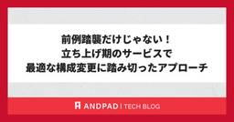

ANDPAD Tech Blog
https://tech.andpad.co.jp/
ANDPAD の開発部からのお知らせやエンジニアリングに関する話題を発信するTech Blog です。
フィード

PDF 生成との終わらない戦い、あるいはデータ量の見積もりミスの話 8
8
ANDPAD Tech Blog
はじめに こんにちは。リアーキテクティングチームの髙橋と申します。 この記事では、アンドパッドで PDF 生成のロジックを独立したサービスとして切り出そうと試み、さまざまな技術的問題にぶつかり、アプローチを考え直すという判断に至るまでの顛末をお話しします。 つまるところ、初期の設計考慮漏れによる失敗談です。ですが、各レイヤーで何が起きていたのかを1つずつ突き止めていく過程は、Web アプリケーションがどんな部品の上に乗って動いているのかを改めて学ぶ良い機会になりました。どなたかの参考になれば幸いです。 教訓 最初に、今回得られた教訓を箇条書きにします。 こうしてまとめると初歩的なことではあるの…
3日前

前例踏襲だけじゃない！立ち上げ期のサービスで最適な構成変更に踏み切ったアプローチ 16
ANDPAD Tech Blog
こんにちは。 サービスプラットフォーム部 SRE チームの谷合です。 普段はメガネやキャンプギア収集と、毎日のビールを楽しみに生きています。 前回は入社後意識的にやっていたボール拾いからトイルの改善に発展させた話を書きました。 tech.andpad.co.jp 今回はタイトルの通り、新規サービスの構成をアーリーフェーズで見直し、前例踏襲ではなく最適な構成に移行した取り組みをご紹介します。 序文 リリースの改善 ネットワーク構成の最適化 さいごに We are hiring! 序文 サービスが産声を上げた直後から数ヶ月のフェーズ。それは、システムが実際にユーザーに使われ始め、初期のアーキテクチ…
7日前

社内システム開発のPMからアンドパッドのPdMへ
ANDPAD Tech Blog
はじめに こんにちは、PdMの永塚です。早いものでアンドパッドに入社してから２年が経過しました。 私は前職では、社内向けの業務システム開発に携わるPMをしていました。営業やカスタマーサポートといった社内メンバーが利用するシステムの新規立ち上げや、基幹システムとの連携などを担当し、現場へのヒアリングを通じて業務の見直しや要件定義を行う日々を送っていました。 現在は、アンドパッドのPdMとして多くのお客様に向けたプロダクトの開発を推進しています。 この2年間、全く異なる環境でプロダクトに向き合う中で、「ユーザーの業務を理解し、あるべき姿を設計する」という本質は共通していながらも、業務の中で求められ…
22日前
RubyKaigi 2026 のコード懇親会と RubyGems/Bundler チームの成果報告
ANDPAD Tech Blog
こんにちは、Ruby コミッタの柴田です。RubyKaigi 2026 in 函館から1ヶ月が経ち、自宅のガーデニングではバラのシーズンが一段落して梅雨に入る前に剪定を...という手入れに移ったところです。 今回はRubyKaigi 2026 2日目の夜にアンドパッドが運営として関わったコード懇親会 (Code Party) と、私がホストを担当した RubyGems/Bundler チームから生まれた成果をまとめます。 コード懇親会の進め方 コード懇親会はクリアコードの須藤さんが提唱しているコンセプトで、お酒の代わりにコードで懇親する形式の懇親会です。今回はアンドパッドが函館市民会館で会場の…
1ヶ月前
アンドパッド 技術イベントのご案内 2026 年 6 月
ANDPAD Tech Blog
こんにちは、 id:sezemi です。 季節外れの台風に振り回されましたが、元気にやっております。 天候急変によるイベントのハンドリングは難しいですねぇ。 さて、アンドパッドでは、技術やプロダクト開発、組織に関するさまざまなカンファレンス・イベントでの登壇、開催や会場提供などを行っています。 今月もイベント情報をまとめてお知らせします。 ぜひご参加ください !! なお、開催状況により、満員となってしまっている場合、すでに受付を終了している場合がございます。 1. スポンサー情報 | 松江Ruby会議12 開催日時 : 2026年6月6日(土) 会場 : 興雲閣 主催 : Matsue.rb …
1ヶ月前
アンドパッドは総勢 23 名で RubyKaigi 2026 を楽しんできました！
ANDPAD Tech Blog
こんにちは、広報の id:sezemi です。 アンドパッドの広報の仕事のかたわら、 Rubyist Magazine 略して「るびま」の編集に携わっています。 ただ編集と言いながら、まだまだスッといい感じの文章が書けないなぁと るびま のチャンネルで呟いたところ、 kakutani さんから「Rubyist にはダジャレの訓練が求められる…(主語ﾃﾞｶ」 というアドバイスをもらい、道理で ruby-jp の Slack でみんな大喜利を (ry 。 精進します！ さて、アンドパッドからは RubyKaigi 2026 に採用チームも含め、総勢 23 名が参加しました。 この記事では、沢山の思…
1ヶ月前
【RubyKaigi 2026】採用担当が振り返るアンドパッドブースの3日間
ANDPAD Tech Blog
こんにちは！開発本部 組織開発部で、エンジニア採用・育成を担当している磯崎と中野です。 アンドパッドがRubyスポンサーとして参加した「RubyKaigi 2026」。今回は、初参加で現地を全力で駆け抜けた磯崎のレポートと、5回目の参加となるマネージャー中野の視点の2つの軸で、熱気あふれる3日間の様子をお届けします。 まずは、大盛況だった現地のブースの様子から振り返ります！ はじめに 開発本部 組織開発部で、エンジニア採用・育成を担当している磯崎です。 私は普段、開発本部付の人事として、日々素晴らしいエンジニアの方々と出会うべく採用活動に奮闘しています。 そんな中、今回はエンジニア採用活動の重…
1ヶ月前
清聴御礼! RubyKaigi 2026 でアンドパッドから 4 名登壇 + 1 名司会 + 1 名スポンサーセッションを行いました
ANDPAD Tech Blog
こんにちは、採用広報の id:sezemi です。 RubyKaigi 2026 が終わって、はや 1 か月、興奮冷めやらぬまま、次は地域 Ruby 会議がやってきますね。 アンドパッドは 6/6 開催の 松江 Ruby 会議12 に協賛しており、当日はブースも出展しますので、また Rubyist の皆さんに会えることを、とても楽しみにしています！ さて、その RubyKaigi 2026 ではアンドパッドから合計 6 名が登壇しました。 この記事では、登壇の裏話、補足、思い出などなどを登壇者に語ってもらいました。 なお、登壇者の一人 hsbt は別エントリで記事を出しますので、ぜひそちらもご…
1ヶ月前
RubyKaigi 2026 アンドパッドブースで実施したアンケート結果から見える Ruby コミュニティの現在地
ANDPAD Tech Blog
こんにちは、Ruby コミッタの柴田 (hsbt) です。最近はプレイするゲームに NTE を追加してしまい、いよいよ早起きする時間を30分繰り上げないとプレイしているゲーム全てのデイリークエの消化が追いつかなくなってきました。 先日の RubyKaigi 2026 では、例年通りアンドパッドはスポンサーとしてブースを出展し、ご当地ランチやドリンクを提供しました。たくさんの方から「これが食べたかった」という声を聞いて、選んだ当事者としては大満足です。 今回のアンドパッドのブースでは、参加者の皆さんに普段の Ruby 開発環境について 7 つの質問に答えていただくアンケートを実施しました。この記…
1ヶ月前
Security-JAWS【第41回】〜Day1〜でAWS WAFの運用について発表しました！
ANDPAD Tech Blog
こんにちは！ アンドパッド セキュリティグループの 宜野座(ぎのざ)です。 2026/05/16(土)に開催された Security-JAWS【第41回】〜Day1〜 にて登壇の機会をいただき、私のセッションでは「AWS WAFの運用を地道に改善し、自社で運用可能にするプラクティス」というタイトルで発表をしました。 今回はCfPを出した背景やセッションでお話しした内容の補足、興味深かったセッションの内容をご紹介します。 Security-JAWS にこれから現地参加したい、CfPを出してみたいと考えている方にも参考になると何よりです。 Security-JAWS について なぜCfPを出したの…
1ヶ月前
CREがMVTを受賞した話~激流を乗り越えるCREチーム~
ANDPAD Tech Blog
こんにちは！CREの山本です。今回はCREがアンドパッドの開発本部とプロダクト本部の合同総会DevPro総会で、MVT（Most Valuable Team）に選ばれた話について書こうと思います！ はじめに 何度かブログに登場しておりましたが、またまた久しぶりの登場となりました。 アンドパッドにJOINしてから色々ありましたが、トータルで約3年半が経ちました。月日が流れるのは早いものです。 私は引き続き引合粗利管理や受発注、請求管理といったFinancial系のプロダクトCREを担当し、リーダーとして日々課題に向き合っております。 MVT受賞 CREチームがアンドパッドの開発本部とプロダクト本…
1ヶ月前
ソフトウェアサプライチェーン攻撃対策実践レポート 2026春
ANDPAD Tech Blog
こんにちは、アンドパッドセキュリティチームの小野寺です。 近年、ソフトウェア開発のエコシステムを狙ったソフトウェアサプライチェーン攻撃が大きな脅威となっており、開発環境や CI/CD パイプラインにおけるセキュリティの強化が急務となっています。 アンドパッドでは、以前のブログでご紹介した EDR によるサプライチェーン攻撃対策とあわせて、より多層的な防御策の導入を進めています。 本記事では、弊社が直近で取り組んだソフトウェアサプライチェーン攻撃に対する具体的な対策について、実践的なアプローチと実運用にのせる上での工夫や課題を交えてご紹介します。 Takumi Guard の導入 GitHub …
1ヶ月前
try! Swift Tokyo 2026 に参加しました！
ANDPAD Tech Blog
今年4月に try! Swift Tokyo 2026 が開催されました。会場は去年と同じく立川、そして今年はワークショップも復活し、技術にどっぷり浸かれる刺激的な3日間となりました。 アンドパッドからは iOS アプリエンジニア3名が参加し、ワークショップは各々興味を惹かれたものを選択、セッションとスポンサーブースは3人仲良く一緒に見て回りました。 この記事では、数々の面白いコンテンツのなかでも特に興味深かったものを各自ピックアップし、その概要や興味深かったポイント、感想などを述べていきます！ （左から）入社したての佐藤、腰の低い髙木、笑顔の硬い西 Day 1：ワークショップ こんにちは、髙…
2ヶ月前
アンドパッド 技術イベントのご案内 2026 年 5 月
ANDPAD Tech Blog
こんにちは、 id:sezemi です。 実は昨年度 2025 年 4 月～ 2026 年 3 月まで自宅のマンションの理事をしていました。 そこで区分所有法の変更などがあり規約の改定をする必要があったのですが、 NotebookLM がいい感じに変更案を作ってくれて承認されました。 仕事だけでなくプライベートも AI 漬けです。 そして、アンドパッドも AI ネイティブなプロダクト "ANDPAD ナレッジ AI" をリリースしております。 業界特化の膨大なデータを蓄積してきたからこそのプロダクトなので、ぜひご期待ください。 ai.andpad.co.jp さて、アンドパッドでは、技術やプロ…
2ヶ月前
Lambdaランタイムの更新をRenovateで検知できるようにしました
ANDPAD Tech Blog
こんにちは、SREの千明です。2020年1月に入社して、気づけば7年目に突入しました。 最近SREでは、イベント参加やブログ執筆が活発になってきているので、私もそれに触発されて久しぶりにブログを執筆することにしました。前回ブログに投稿したのが2020年6月だったので、なんと約6年ぶりの投稿になります。 WordPressをShifterへ移行した話 - ANDPAD Tech Blog 今回は最近導入した「Lambdaランタイムの更新をRenovateで検知できるようにする仕組み」について紹介しようと思います。 こんな方におすすめの内容です 今回の内容は、以下のような方向けになっています。ぜひ…
2ヶ月前
ANDPADをビジネスの心臓部へ。システム連携コンサルタントの1日のスケジュールと業務内容を徹底解剖
ANDPAD Tech Blog
こんにちは。プロダクト本部の公原です。 私は現在、プロダクトマーケティング部でPMMと兼務で「システム連携コンサルタント」という役割を担っています。 「システム連携コンサルタント」という職種ですが、職種名から実際の業務のイメージがしにくいといったお話をカジュアル面談などでお伺いします。 そこで今回は「実際、毎日何をしているの？」という疑問にお答えするため、システム連携コンサルタントの1日をご紹介していきます。 そもそもシステム連携コンサルタントとは、お客様の利用するシステムとANDPADをAPIで繋ぎ、最適な業務フローを設計するというポジションです。 詳しく知りたいと思った方は、この記事だけで…
2ヶ月前
Active Record アソシエーションを安全に廃止する
ANDPAD Tech Blog
こんにちは、ザックです。アンドパッドでフリーランスの Rails エンジニアとして働きながら、趣味で Ruby や Rails にコントリビュートしています。 このポストでは、Rails へ静かに加わったあまり知られていない機能を紹介します。大規模な Rails アプリケーションを扱うエンジニアには、特に役立つと思っています。 Deprecated Associations 古いアソシエーションの削除は、本来ならルーティンな作業のはずですが、実際には手探りになりがちです。 コードベースを検索し、明らかな呼び出し箇所を修正し、テストを走らせ、アソシエーションを削除します。すべて問題なさそうに見え…
2ヶ月前
アンドパッド PMMの役割とリアルな1日
ANDPAD Tech Blog
こんにちは、PMMの西村です。月日が経つものは早いもので、入社して早1年（2025年7月入社）が経過しようとしています。その間に、PMMメンバーが3人増えています！ 私は前職でもPMMをしていましたが、「PMMって聞いたことはあるけれど、具体的にどんなことをする役割かわからない」「会社によって求められることが違う印象がある」という声を聞くことがあります。 そこで、本日は「アンドパッド PMMの役割とリアルな1日」について紹介したいと思います！ 1. 「まだ、足りない」という現状 カジュアル面談でよく「アンドパッドはもう組織として完成されていますよね？」という質問をいただきます。しかし、実態は全…
3ヶ月前
アンドパッドが RubyKaigi 2026 で Ruby スポンサーになった理由
ANDPAD Tech Blog
こんにちは、 id:sezemi です。 この特集を始めた頃は、子どもたちの春休みのお弁当に悩む時期でしたが、いまは学校が始まりました。 ふい～と胸をなでおろしつつ、ふと昼食時の静寂がさみしさを感じる在宅勤務です。 さて、いよいよ RubyKaigi 2026 まで、あと 7 日です。 RubyKaigi 2026 特集もこの記事がラストです。 これまで Drinkup 、 Drinks and Local Meals 、立ち読み喫茶、アンドパッドから登壇する Speakers によるトーク紹介と特集して参りました。 アンドパッドは RubyKaigi 2026 で Ruby Sponsor …
3ヶ月前
アンドパッドから RubyKaigi 2026 にエンジニア 4 名が登壇します! - Ruby のコアからエコシステムまで
ANDPAD Tech Blog
こんにちは、 id:sezemi です。 小 4 になる娘から素朴に「大人は春休み、ないの？」と聞かれて、「今度パパは函館に行くんだ！」と謎の返しをしてきました。 間違ってない、 RubyKaigi は各地に連れて行ってくれる旅行のようなもんなんだから。 さて、その RubyKaigi 2026 です。 テックブログでの RubyKaigi 2026 特集月間はまだまだ続きます。 これまでの特集記事は以下のリンクから。 アンドパッドは RubyKaigi 2026 で Ruby Sponsor として Drinks and Local Meals と Drinkup を提供します(前編) アン…
3ヶ月前
浮いたボールを拾いまくったらトイルを改善していた話
ANDPAD Tech Blog
こんにちは。 サービスプラットフォーム部 SRE チームの谷合です。 普段はメガネ集めと、毎日のビールを楽しみながら生きています。 2025年11月に入社してから今日まで、浮いているボールや浮きそうなボール、あるいはすでに落ちているボールを拾うことを、意識的にやってきました。 ちなみに、あとから振り返ってみると、その姿勢の背景には、Kyash 執行役員 VP of Engineering の Konifar さんの記事の影響があったように思います。 「ボールは落とさない」という考え方に以前から強く共感していましたが、入社後はそれを一段階進めて、「なら拾いにいこう」と思ったきっかけが、まさにこの…
3ヶ月前
アンドパッドは RubyKaigi 2026 で立ち読み喫茶と本のプレゼント企画をやります
ANDPAD Tech Blog
こんにちは、Ruby コミッタの@hsbt です。函館の後に実家に帰るついでに北海道旅行に行こうと15年ぶりくらいに十勝方面の旅程を組んでいる真っ最中です。十勝といえば豚丼、ということで楽しみにしているのですが、ここにきてインデアンのカレーが良い、という情報を入手してそんなに食べられない...となっています。 さて、今回は RubyKaigi 2026 のアンドパッドブースで実施する「立ち読み喫茶」という企画のご紹介です。 アンドパッドは RubyKaigi 2026 で Ruby Sponsor として Drinks and Local Meals と Drinkup を提供します(前編) …
3ヶ月前
アンドパッドは RubyKaigi 2026 で Ruby Sponsor として Drinks and Local Meals と Drinkup を提供します(後編)
ANDPAD Tech Blog
こんにちは Ruby コミッタの hsbt です。4月に入って RubyKaigi... もありますがバラのシュートが順調に成長してきて函館に行っている最中に開花しないでくれ〜と祈りつつ、5月の満開に向けて毎日手入れをする日々が続いています。 さて、この記事では id:sezemi によるアンドパッドのスポンサー内容紹介の後編として、Drinks and Local Meals について紹介したいと思います。 RubyKaigi 2026 に参加する Rubyist の皆さん、必見です(2回目)。 tech.andpad.co.jp Drinks and Local Meals のメニュー大公…
3ヶ月前
アンドパッドは RubyKaigi 2026 で Ruby Sponsor として Drinks and Local Meals と Drinkup を提供します(前編)
ANDPAD Tech Blog
Hello, Rubyist ! id:sezemi です。 先日社内の RubyKaigi 2026 の参加者を集めて 30 分のキックオフをしたところ、ブースやカスタムスポンサーの内容を説明するだけで 30 分話してしまいました。 盛り沢山すぎる ... 。 さて、昨日 4/2 に開催された Omotesando.rb #120 でアンドパッドは会場スポンサーを務めました。 Omotesando.rb の皆さま、ご来場 and いい時間をありがとうございました ! そこで会場スポンサー LT をしたのですが、 RubyKaigi 2026 でアンドパッドがカスタムスポンサーをする Drin…
3ヶ月前
アンドパッドのCREがTamachi.sre#3で発表してきました！
ANDPAD Tech Blog
アンドパッドCREチームの島根です。 2026/03/19（木）に開催されたTamachi.sre#3に登壇者の1人として「極端に遅いリクエストとの戦い」というタイトルで発表させて頂きました。 この記事では登壇した内容、現地の様子や反響などについて書いていき、アンドパッドCREチームの取り組みやTamachi.sreについて少しでも興味を持って頂ければ嬉しいです。 Tamachi.sreとは Tamachi.sreはSRE NEXTのコアスタッフである渡部さん、横山さんと、元コアスタッフで当社FinOpsチームTechLeadの吉澤さんが勤め先が3名とも田町駅近辺という共通点をキッカケに発足し…
3ヶ月前
アンドパッド 技術イベントのご案内 2026 年 4 月
ANDPAD Tech Blog
こんにちは、 id:sezemi です。 子どもたちが春休みを迎え、毎日のお昼の献立に頭を悩ませています。 食わず嫌いが多い子どもたち向けのナイスソリューションを渇望しております。 さて、アンドパッドでは、技術やプロダクト開発、組織に関するさまざまなカンファレンス・イベントでの登壇、開催や会場提供などを行っています。 今月もイベント情報をまとめてお知らせします。 ぜひご参加ください !! なお、開催状況により、満員となってしまっている場合、すでに受付を終了している場合がございます。 1. 会場提供情報 | 【ハイブリッド開催】Omotesando.rb #120 開催日時 : 2026 年 4…
3ヶ月前
Security.any#09で「建設DXを支えるANDPAD: 2025年のセキュリティの取り組みと卒業したいセキュリティ」というタイトルで発表しました！
ANDPAD Tech Blog
こんにちは！ アンドパッド セキュリティグループの 宜野座(ぎのざ)です。 2026/03/19(木)に開催されたSecurity.any#09でアンドパッドは会場スポンサーとして協賛し、スポンサーLTに参加させていただきました！ 私のLTでは、「建設DXを支えるANDPAD: 2025年のセキュリティの取り組みと卒業したいセキュリティ」というタイトルで発表いたしました。 今回はスポンサーLTと興味深かったLTの内容、現地の様子をご紹介します。 Security.any にこれから参加したいと考えている方にも参考になると何よりです。 Security.anyについて Security.any#…
3ヶ月前
RubyGems/Bundler における Cooldown 機能の議論と現状
ANDPAD Tech Blog
こんにちは、Ruby コミッタの柴田です。最近は暖かくなり、ガーデニングで栽培しているバラや藤の新芽や花芽が出てくる時期になってきたので、しっかり花を咲かせるように薬剤や肥料の準備をしなければ〜と必要なものの買い物計画を立てている真っ最中です。 今回はサプライチェーンセキュリティの対策として他のエコシステムで導入が進んでいる「Cooldown（クールダウン）」機能を紹介し、私がメンテナンスしている RubyGems と Bundler でも導入するべきか検討した背景と、今後の方向性についてお話しします。 Cooldown とは何か Cooldown とは、パッケージの新しいバージョンがリリース…
3ヶ月前
アンドパッドは Go Conference mini in Sendai 2026 を満喫してきました ! (gopher 会クイズの解説付き)
ANDPAD Tech Blog
こんにちは、 id:sezemi です。 Go Conference mini in Sendai 2026 で Gyutan スポンサーを務めながら、肝心の牛タンをいつ食べられるのか、腐心していたのですが、一緒にいった小島さんから「たんや善治郎 さんは普通に行列が出来てしまうけど、お弁当なら作りたてで美味しい」という hack を教えてもらったので、それに倣ってみると、とても美味しく堪能できました。 仙台出張の思い出です。 さて、アンドパッドはその Go Conference mini in Sendai 2026 に協賛・ブース出展し、登壇者 2 名を含む、合計 4 名の Gopher が…
4ヶ月前
アンドパッド 技術イベントのご案内 2026 年 3 月
ANDPAD Tech Blog
こんにちは、 id:sezemi です。 小 3 の娘がガチャガチャ (いまはカプセルトイというのが主流 ...) にハマっており、その中でも "こめちゅあ" を集めています。 ただハマったのが最近で、いま出ている vol.2 より、 vol.1 に夢中になっていて、収集が難しくなっております。 もし「こめちゅあ vol.1 がココにあるよ！」という情報があれば、こそっと X でメンションいただけると、とても喜びます。 さて、アンドパッドでは、技術やプロダクト開発、組織に関するさまざまなカンファレンス・イベントでの登壇、開催や会場提供などを行っています。毎月、イベント情報をまとめてお知らせして…
4ヶ月前